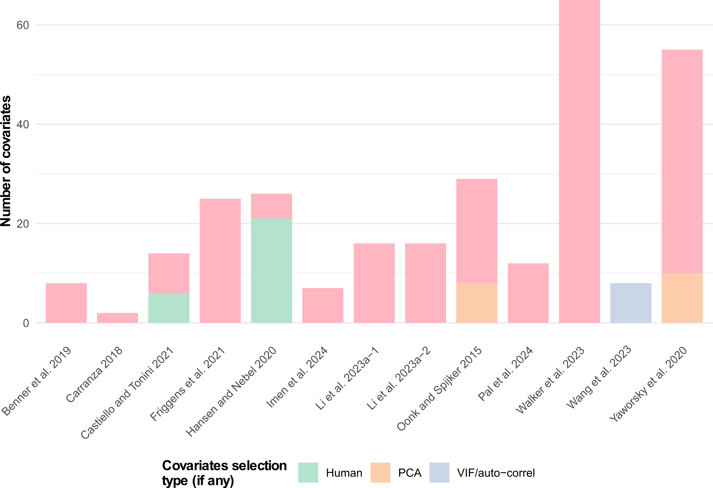

| Approach | Family | Description | Model abreviation | Number of uses | Number of time the model performed the best |
|---|---|---|---|---|---|
| Machine learning | Artificial Neural Network | U-Net | U-Net | 11 | 3 |
| Mask Region-based Convolutional Neural Network | MR-CNN | 10 | 1 | ||
| Faster Region based Convolutional Neural Network | FR-CNN | 6 | 0 | ||
| Convolutional Neural Network | CNN | 5 | 0 | ||
| ResNet | ResNet | 5 | 0 | ||
| You Only Look Once | YOLO | 4 | 0 | ||
| Feedforward Neural Network | FNN | 3 | 0 | ||
| RetinaNet | RN | 2 | 0 | ||
| Semantic Segmentation Model | SegNet | 2 | 0 | ||
| SimpleNet | SimpleNet | 2 | 0 | ||
| Single Shot MultiBox Detector | SSD | 2 | 0 | ||
| Visual Geometry Group | VGG | 1 | 0 | ||
| Xception U-Net | Xception | 1 | 0 | ||
| You Only Learn One Representation | YOLOR | 1 | 0 | ||
| DeepLabv3+ | DL3 | 1 | 0 | ||
| Region-Based CNN | R-CNN | 1 | 0 | ||
| Attention Mechanism and Frequency Ratio | AMFR | 1 | 0 | ||
| Neural Network | NN | 1 | 1 | ||
| Bayesian Classifier | Maximum Entropy | MaxEnt | 4 | 1 | |
| Naïve Bayes | NB | 1 | 0 | ||
| Decision Trees and Rule Induction | Decision Tree/Classification Tree | DT | 2 | 0 | |
| Classification And Regression Tree (CART) | CART | 1 | 0 | ||
| Fast and Frugal Tree | FFT | 1 | 0 | ||
| Ensemble Learning | Random Forest | RF | 28 | 6 | |
| Adaptative Boost | AdaBoost | 1 | 0 | ||
| Bootstrap Agreggating | BAgg | 1 | 0 | ||
| SMOTE Boost | SMOTEBoost | 1 | 0 | ||
| Synthetic Minority Oversampling Technique + Edited Nearest Neighbour Rule | SMOTEENN | 1 | 0 | ||
| Viola-Jones Cascade Classifier | VL-CC | 1 | 0 | ||
| Linear Classifier | Support Vector Machine | SVM | 5 | 0 | |
| Nearest Neighbour Classifier | k-nearest neighbors | kNN | 3 | 0 | |
| Weighted k-nearest neighbors | kkNN | 1 | 0 | ||
| Polynomial Classifier | Support Vector Machine with Radial Basis Function Kernel | SVMr | 3 | 1 | |
| Unsupervised Learning and Clustering | Iterative Self-Organizing Data Analysis | ISODATA | 3 | 0 | |
| Nearest Centroid | NC | 1 | 0 | ||
| Self-Organizing Map | SOM | 1 | 0 | ||
| NA | TOTAL | 36 | 118 | 13 | |
| Statistics | Dimensionality reduction | k-Mean Clustering | k-MC | 1 | 0 |
| Linear regression | Linear Regression | LR | 1 | 0 |
Humans, are you there? Comparative approach of two distinguishable methods for human installation detection: Automatic structure detection and archaeological predictive models
Abstract
Prediction and detection of archaeological features have long been central topics in archaeological science. In recent years, artificial intelligence and machine learning have increasingly complemented (and in some cases replaced) traditional statistical approaches. This paper examines two distinct yet related subfields: automatic archaeological structure detection and archaeological predictive modelling. We reviewed 84 articles addressing these two topics using a rapid systematic protocol, published from 2005 to 2024, and highlighted a sharp rise in publications after 2021, particularly for structure detection studies. Our results reveal the growing predominance of deep learning methods in this area. At the same time, we explore the similarities between the two approaches, notably their reliance on similar theoretical backgrounds and remote sensing imagery as input data. We also identify key differences: predictive models often involve more complex theoretical frameworks and a broader variety of data types, while structure detection is dominated by convolutional neural network models. Finally, we outline potential future directions for both fields based on the trends observed in the reviewed literature.
Keywords
machine learning; site detection; review; archaeological theory; archaeological modelling
Keywords: machine learning; site detection; review; archaeological theory; archaeological modelling
Highlights: - 84 papers reviewed. - Massive development of machine learning for archaeological features detection and prediction approaches since 2021. - Asymmetry in publication numbers between automatic structure detection, which dominates, and archaeological predictive models. - Automatic structure detection approaches are more suited for modern analysis, given their “easier” interpretation.
1 Introduction
One of the central questions in archaeology lies in understanding the organisation of past societies (Renfrew and Bahn, 2020; Trigger, 1967), whether from an intra-site or inter-site perspective. Spatial organisation is a key driver of both present (Lévi-Strauss, 1936) and past human interactions (Bonnichsen, 1973). Consequently, the relationship between humans and space/place has been explored in depth by archaeologists since the mid-twentieth century (Chang, 1968; Hodder and Orton, 1976; Judge and Lynne, 1988a; Kroll et al., 1991; Parsons, 1972; Phillips and Willey, 1953; Willey, 1953). These studies have not only addressed relationships between humans but also human–environment interactions and interdependencies, emphasising the concept of resilience (Keck and Sakdapolrak, 2013). The distribution of settlements and other perennial human structures has been a key indicator of these spatial dynamics within societies (Chapman, 1999; Willey, 1953). To investigate such patterns, statistical approaches have been developed to assess spatial dependencies between settlements and environmental factors (Kvamme, 1990; Trigger, 1967) or to detect distinctive site distributions that may reveal specific social behaviours (Hodder and Orton, 1976; Judge and Lynne, 1988b; Kohler, 1988; Kroll et al., 1991).
In parallel, the past decade has witnessed a “data deluge” in archaeology (Bevan, 2015), evident across subfields such as GIS and remote sensing (Argyrou and Agapiou, 2022; Davis and Douglass, 2020), text-based records (Brandsen, 2023), and reflected also in the increasing frequency of machine learning applications in the field (Bellat et al., 2025). This expansion has been particularly transformative in remote sensing, where airborne laser scanning (ALS or LiDAR) has produced high-resolution imagery capable of penetrating dense vegetation (Bennett et al., 2025), and the availability of diverse satellite datasets has greatly increased (Cracknell, 2018). Advances in automated detection and segmentation algorithms (Bonhage et al., 2021; Bundzel et al., 2020; Guyot et al., 2021), improved GIS training for younger generations of archaeologists (Argyrou and Agapiou, 2022), and the rise of open-science collaborations and networks (Batist and Roe, 2024) have further accelerated this trend.
Although the idea of reducing survey results to binary classifications - “site” or “non-site” - dates back to Willey (1953), the real beginnings of predictive modelling in archaeology emerged in the 1970s and 1980s (Judge and Lynne, 1988a; Thomas, 1973), marking the rise of what has been termed “predictive archaeology” (Verhagen and Whitley, 2012, p. 51). This approach has been defined as an attempt to predict “the location of archaeological sites or materials in a region, based either on a sample of that region or on fundamental notions concerning human behaviour” (Kohler and Parker, 1986), under the “assumption that the location of archaeological remains in the landscape is not random, but is related to certain characteristics of the natural environment” (Verhagen, 2007, p. 13). With the development of GIS and enhanced computing capacity in the late 1980s (Allen et al., 1990; Djindjian, 2015; Verhagen, 2007, pp. 15–16), a new generation of archaeological predictive models (henceforth APMs) emerged, designed to map site probabilities (Altschul, 1984; Kohler, 1988; Kvamme, 1990; Moon, 1993; Warren, 1990). These gave rise to two distinct approaches: inductive (data-driven) models and deductive (theory-driven) ones (Kamermans and Wansleeben, 1999; Wheatley and Gillings, 2013). The former are constructed from observed variables, such as environmental or anthropogenic factors (Carrer, 2013; Croce et al., 2025; Ebert, 2000; Yaworsky et al., 2020), while the latter rely on expert-defined parameters (Canning, 2005). Yet theory-driven models have remained underdeveloped, often criticised as overly simplistic or “unsophisticated” (Verhagen and Whitley, 2012). They also bear strong affinities with agent-based modelling (Lake, 2015), another computational approach in archaeology. The opposition between inductive and deductive methods, rooted in debates of the 1970s, is now increasingly regarded as outdated. Both insiders (Kvamme, 2006; Verhagen and Whitley, 2012) and external commentators (Salmon, 1976) view it as more of a historical and epistemological distinction than a current methodological divide.
Following the development of APMs, new approaches with automatic structure detection (henceforth ASD) emerged (Menze et al., 2006), supported by the spread of high-resolution satellite imagery, particularly digital elevation model (DEM) from the shuttle radar topographic mission (SRTM) in 2000 (Farr et al., 2007). This innovative use of learning (henceforth ML) for the semi-automated detection of archaeological structures was aimed at tells, which are mounds formed from repeated human use, using SRTM data at a resolution of 90 m (Menze et al., 2006). Despite the early use of ML for site detection, the more dramatic uptake of this method has only taken place since 2018 (Bellat et al., 2025), thanks to technological innovation and improvements in satellite imagery quality, combined with the increase in open-access satellite datasets such as Sentinel and Landsat (Zhu et al., 2019). Most archaeological structures are smaller than tells and require very-high-resolution satellite data (< 1 m), in order to be detected. The decreasing cost of drones has also allowed them to be adopted by archaeologists for site documentation, which can generate centimetre and even millimetre resolution imagery. Along with all of the improvements in data availability and quality, ML methods saw significant advances in the late 2000s and 2010s, with the development of fast Graphics Processing Units (GPU’s) which allowed for renewed interest and development in Deep Learning (LeCun et al., 2015) and Neural Networks aimed at analysing sparse data (Ronneberger et al., 2015), which archaeological data usually is.
There have been criticisms of ASD, in the same way as how APMs were dismissed as lacking in theory. These criticisms are, however, enhanced for ML in archaeology due to the black box nature of many machine learning models, and concerns over accuracy and contextualisation of the results (Casana, 2014; Opitz and Herrmann, 2018).While these debates are important, and will lead to improvements in how ML for automatic structure detection is approached, binary questions such as whether a site is present or not in a location can lend themselves to automated approaches, especially when results are properly contextualised and interpreted by relevant experts. The original aim of Menze et al. (2006), to create: “A comprehensive and accurate listing of these sites”, is still one of the goals of many applications of automatic structure detection. It is a non-destructive tool that allows for archaeological sites to be identified on a far larger scale than would be possible by fieldwork or manual survey of satellite imagery, while also increasing consistency and allowing for documentation of the entire process. It also allows for the detection of sites that have already been destroyed, through the use of historical imagery (Bulawka et al., 2024), the detection of sites in areas that are remote or difficult to access due to e.g. political instability (Rayne et al., 2020), and country-wide detection of sites (Berganzo-Besga et al., 2021).
From the above mentioned elements, we can ask ourselves two questions: What are the new trends in archaeological predictive models and archaeological structure detection? What approaches do they employ in common, and which are unique to each?
2 Methodology
2.1 Article selection
We conducted a rapid systematic review (Jesson et al., 2012) in accordance with the Preferred Reporting Items for Systematic Reviews and Meta-Analyses (PRISMA) guidelines (Page et al., 2021). This approach was chosen because it combines a relatively short scoping process along with methodological transparency (Haby et al., 2016). Our previous work (Bellat et al., 2025) served as the starting point for this review, to which we added records published in 2023 and 2024. The protocol comprised twelve queries derived from a set of archaeological and machine learning “keywords” (Box 1), tested across six online databases: Web of Science, PubMed, Tübingen University Library, German Archaeological Institute, German National Library, and Google Scholar. Records published up to 2022 (n = 730) were taken from Bellat et al. (2024), while an additional 278 records were collected for 2023 and 2024, resulting in a total dataset of 1,006 records (Figure 1).
The screening process followed two inclusion criteria (Dekkers et al., 2022, pp. 202–208). First, only peer-reviewed records in academic journals were retained to ensure methodological consistency. Second, only English-language publications were included, also for consistency. From the Bellat et al. (2024) dataset, we only selected studies focusing on archaeological predictive modelling or automatic structure detection. For 2023 and 2024 papers, we read all abstracts and titles and manually selected publications that mentioned either of these two approaches.
We then applied two exclusion criteria (Dekkers et al., 2022, pp. 208–209) to refine the dataset. First, we restricted the sample to papers applying machine learning methods, excluding studies based solely on statistical approaches (e.g. regression-based methods, hard voting classifiers, and data transformation techniques), in line with related literature (Bellat et al., 2025; Bzdok et al., 2018; Eleftheriadou et al., 2025). While statistical methods focus on identifying relationships within datasets, machine learning aims to improve predictions for new data based on prior training (Alpaydin, 2014). Second, we excluded theory-based and review papers, as these do not provide an actual application of the ML methods.
In total, our review protocol yielded 85 included articles: 48 from Bellat et al. (2025) and 37 newly collected from 2023 and 2024.
2.2 Data collection
From the reviewed records, we extracted 11 variables, both numerical and categorical Table 1. The classification of model families followed Alpaydin (2014), and Bellat et al. (2025), and Eleftheriadou et al. (2025), while the archaeological subfield of each study was assigned according to the framework established in previous work (Bellat et al., 2025; Kelly and Thomas, 2017). Evaluation methods were grouped into three categories: classification, regression, and clustering (Alpaydin, 2014, pp. 5–13). Study outcomes were classified as successful, unsuccessful, mixed, affected by methodological issues, or undefined. Additional detail was recorded for pre-training procedures and input data classes.
| Feature | Number of categories |
|---|---|
| Year | 16 |
| Model | 36 |
| Best model | 13 |
| Family | 8 |
| Subfield | 5 |
| Input data | 4 |
| Evaluation | 3 |
| Result | 5 |
| Pre-training | 4 |
| Data availability | 3 |
| Code availability | 2 |
Table 1: The eleven features collected systematically from the review along with how many categories they comprised.
Additionally, for the APM records, we also extracted the number of covariates used in the study and the type of feature selection executed, if any. We also extracted the type of performance metrics reported in each study, as well as their associated values (Figure 4). Since many publications did not provide complete performance metrics, we computed additional values where possible (e.g. from correlation matrices) to enable greater comparability across studies. Specifically, we calculated recall, precision, accuracy, and the F1-score (Equations 1-4), based on the true or false positives and negatives (TP, TN, FP and FN). In cases where multiple models or study areas were presented, only the highest reported score was retained. Full definitions of all metric acronyms are provided in the glossary.
\[Recall = \frac{TP}{TP + FP}\]
\[Precision = \frac{TP}{TP + FN}\]
\[Accuracy = \frac{TP + TN}{TP + TN + FP + FN}\]
\[F1-score = 2\cdot\frac{recall \cdot precision}{recall + precision}\]
3 Results
From the 85 records analysed, 15 addressed APM approaches and 69 focused on ASD techniques (Figure 2). One study applied two distinct ASD methods, and another used two different APM approaches; these were therefore counted as separate study cases (Agapiou et al., 2021; Li et al., 2024). A clear trend is visible from 2018 onwards, with at least one publication per year in each application area. This pattern intensified after 2020, with around 75% of all papers (n = 62) published in 2021 or later. The rapid growth of machine learning applications in archaeology since 2018, and particularly from 2020 and 2021, has also been noted by Bickler (2021), Eleftheriadou et al. (2025, fig. 1), and in our previous work (Bellat et al., 2025, fig. 2).
Regarding the type of algorithms used, deep learning methods and artificial neural networks (ANNs) are the most represented, with 59 uses (Figure 3), followed by ensemble learning models (n = 33), in particular, random forest (RF), which is the most prominent model with 28 applications. All other families of machine learning models, Bayesian classifiers, linear classifiers, unsupervised learning and clustering, decision trees and rule induction, nearest neighbour classifiers and polynomial classifiers, are more or less, equally represented (Figure 3). The rise of ANNs can be seen from 2020 and 2021 onwards (see supplementary file) and follow the general trend of all reviewed publications (Figure 2). There is a high diversity of models used, with 36 different algorithms but only half of it have been used more than once. This number could have also been affected by the level of granularity we used for the classification of the methods, as no inter-rater reliability analyses were performed due to expediency. Furthermore, we counted two applications of statistical methods, used in parallel of other machine learning models, one linear regression (Fuentes-Carbajal et al., 2023) and one k-means clustering (Ben-Romdhane et al., 2023).
From the collected performance metrics, we identified 19 unique measures (Figure 5), though only 9 appeared in more than one study. Among ASD applications, recall, precision, and F1-score were reported in 65% of cases (n = 45), with accuracy additionally included in 25 of these. Intersection over Union (IoU) was used in 9 studies, mainly in segmentation tasks. For APMs, 68% (n = 11) reported Area Under the Curve (AUC), while only three relied on alternative metrics.
We also examined model performance scores by plotting precision against recall for ASD models, including F1-score and accuracy when available (Figure 6). This analysis shows that most studies achieved relatively high performance. The median F1-score was 0.76, while the median accuracy reached 0.86. Precision tended to be slightly higher (median = 0.86) than recall (median = 0.74). However, a subset of studies reported very low precision, which reduced the mean values of both precision and recall to 0.74.
4 Discussion
4.1 Common elements
From a theoretical perspective, both archaeological predictive models and archaeological structure detection share a common conceptual background. At their core lies the notion of site probability (Gillies et al., 2016; Hodder and Orton, 1976; Willey, 1953), rooted in the fundamental archaeological question of why “populations located sites where they did” (Kvamme, 2020, p. 213). Both approaches address this question by attempting to predict site locations. Judge and Lynne defined prediction as “the ability to foretell on the basis of observation, experience, or scientific reason” (Judge and Lynne, 1988b, p. 2). This predictive dimension was explicitly present in the early stages of APMs (Verhagen and Whitley, 2012), and is even reflected in their name, but it is less immediately visible in the terminology of ASD. Nevertheless, one of the earliest works to apply predictive modelling for archaeological structure detection in remote sensing imagery - Menze et al. (2006) on Syrian tells - explicitly framed the task as the need for “a comprehensive and accurate listing of these sites” effectively operationalising presence/absence prediction in a way analogous to APMs.
Another key similarity between APMs and ASDs lies in their reliance on remote sensing data, whether derived from UAVs (e.g. Monna et al., 2020; Orengo and Garcia-Molsosa, 2019; Sakai et al., 2024) , aircraft (e.g. Bonhage et al., 2021; Guyot et al., 2021; Lidberg et al., 2024), or satellites (e.g. Caspari and Crespo, 2019; Castiello and Tonini, 2021; Karamitrou et al., 2023). The rise of both applications is closely tied to the broader expansion of remote sensing in archaeology (Argyrou and Agapiou, 2022), itself driven by the rapid increase in Earth observation satellites since 2015 (Figure 7). This growth has also been fuelled by greater accessibility to satellite and LiDAR datasets, as well as by major improvements in image resolution, particularly from modern airborne laser scanning (ALS) platforms (0.5 - 1 m resolution) and UAVs. Future developments in remote sensing are likely to further enhance archaeological applications, not only through sensor advances but also through computational methods such as super-resolution techniques (Liu et al., 2025; Wang et al., 2022).
Despite differences in the types of models employed in APMs and ASDs, both fields show a strong reliance on the RF algorithm. In ASD tasks, RF accounts for nearly 20% of applications (n = 18), while in APMs it represents 41% (n = 10). The prominence of RF in archaeological machine learning is unsurprising: the method is relatively straightforward to implement and can be applied flexibly to both classification and prediction problems (Breiman, 2001).
4.2 Differences in the approaches
While APMs and ASDs share a number of similarities, important differences explain why they have followed distinct research trajectories. From a theoretical standpoint, APMs benefit from a more established background built over more than 40 years of practice (Judge and Lynne, 1988a; Kvamme, 2020). They have also faced criticism, particularly for their perceived deterministic nature (Kamermans et al., 2004; Kvamme, 2006), reflecting their strong roots in ecological science (Yaworsky et al., 2024). By contrast, ASDs have been less subject to such criticism, as they are more data-driven and object-focused. Their main limitations concern their ability to connect with broader archaeological questions and engage a wider audience (Davis, 2021, 2020, 2019). However, the past five years have seen growing interest in ASDs (Bennett et al., 2025). The OpenAI to Z Challenge is one example of bridging a niche method with public engagement, aiming to locate archaeological sites in the Amazon using large language models and computer vision tools with OpenAI o3/o4 mini and GPT-4.1 https://openai.com/openai-to-z-challenge/.
Differences are also evident in the use of machine learning methods. ASD studies frequently employ artificial neural networks (ANNs; n = 57), particularly U-Net (e.g. Anttiroiko et al., 2023; Bundzel et al., 2020; Garcia-Molsosa et al., 2021), convolutional neural networks (CNNs Gallwey et al., 2019; Ikäheimo, 2023; Soroush et al., 2020), and their region-based or mask-based variants (e.g. Bonhage et al., 2021; Quintus et al., 2023; Verschoof-van der Vaart and Lambers, 2019). In contrast, our review found only two APM studies using ANNs (Oonk and Spijker, 2015; Wang et al., 2023). Bayesian classifiers also show divergent use: MaxEnt appears exclusively in APMs (e.g. Benner et al., 2019; Imen et al., 2024; Wang et al., 2023), given its suitability for handling pseudo-absence data (Yaworsky et al., 2020).
Another major difference lies in the input data. ASD typically relies on single-image datasets (LiDAR, UAV, or satellite imagery, Altaweel et al., 2022; Guyot et al., 2021). This choice is partly due to the finer resolution of such imagery (< 10 m), suited to detecting small structures, and partly to the suitability of deep learning models for image recognition. By contrast, APMs often integrate multiband datasets - including DEMs, spectral information, and soil chemistry - with more than ten covariates commonly included (Castiello and Tonini, 2021; Oonk and Spijker, 2015). The number of covariates is less limited as the process does not need recognition, but prediction based on pixel values. Feature selection, a method to reduce of the number of input data variables (Figure 8), is often applied to simplify the model and increase transposability, either through expert-driven choices (Friggens et al., 2021; Hansen and Nebel, 2020) or statistical methods (Oonk and Spijker, 2015; Wang et al., 2023; Yaworsky et al., 2020).

Interpretability also differs markedly. ASD, especially when based on deep learning, is often considered a “black box” because the contribution of individual features is unclear (Bickler, 2021). Recent progress in explainable AI (XAI) has improved transparency, for example, through saliency maps that highlight which areas of an image drive predictions Rudin (2019). However, XAI remains relatively uncommon in ASD. In contrast, APMs naturally lend themselves to interpretation, as the influence of each covariate can be quantified and visualised (Li et al., 2024).
Finally, APMs generally follow a well-established and relatively lightweight workflow requiring limited computational resources, reflecting their long-standing use in archaeology. By contrast, ASD research is less standardised, employing a wide range of models and metrics (Figure 3; Figure 5; Figure 6). This diversity is unsurprising given its recent and rapidly evolving development. Over time, ASD workflows may become more structured as the field matures. However, they remain computationally demanding, requiring substantial time and resources despite the accessibility of cloud platforms such as Google Colab.
5 Conclusion
This review has examined recent developments and trends of the use of machine learning in two different approaches in archaeology: archaeological structure detection (ASD) and archaeological predictive models (APMs). Our survey, based on a reproducible methodology, covers studies published from the mid-2000s to 2024. As in other subfields of AI in archaeology, ASD has attracted growing interest since 2020, while APM has not yet fully embraced the AI transition, with relatively few studies adopting such methods.
The dominance of artificial neural networks in ASD reflects the suitability of deep learning for image recognition. Convolutional neural networks, and particularly MR-CNNs, have proven highly effective for detecting archaeological features and are now widely used. By contrast, APMs continue to rely on more established approaches, such as Bayesian classifiers (e.g., MaxEnt) and ensemble learning with random forest. Progress in explainable AI is argued by to be able to improve the interpretability of deep learning, which could particularly benefit ASD applications (Labba et al., 2023). However, this positivist vision of AI progress is not shared by all (Gattiglia, 2025; Tenzer et al., 2024).
Our comparison has highlighted both theoretical and methodological differences Table 2. APMs build on a long-standing research tradition and tend to employ more standardised workflows, while ASD remains less structured and more experimental. The diversity of input data also distinguishes the two approaches: APMs integrate multiple covariates (e.g., digital elevation models, spectral data, climate variables), providing a broader picture of past landscapes, whereas ASD focuses mainly on single-band imagery (LiDAR, aerial or satellite data). ASD tasks also demand greater computational resources in terms of time and processing power.
| Element | Archaeological predictive models | Automatic structure detection |
|---|---|---|
| Strong theoretical background and foundations | True, with developed literature | Very little access to input data |
| Number of input data | Exhaustive, all possible landscape features | Often limited to a single band due to model design |
| Pre-treatment | Mixed, feature selection and sampling selection can occur | Limited data augmentation in a few cases |
| Model complexity | Low. Ensemble learning and Bayesian classifier models | High. Neural network models with millions of parameters |
| Time needed | Low. Limited time needed for local and regional-based model | High. Large amount of time needed for deep learning computation model. |
| Cost | Low cost | Low to high cost in case of high compute power needed for model training needing GPU capacities |
| Model interpretability | High, with each feature’s influence on the model | Low, with neural network models acting as “black boxes” |
| Metrics | Few of the metrics available | Numerous metrics available depending on the segmentation task |
| Result interpretability | Limited. Prediction maps and binary maps can be computed when needed | Easy to read results |
| Adaptability | Limited to a type of landscape | Limited to the type of structure studied |
Table 2: Summary of various aspects of ASD and APM approaches.
From this review, several future directions can be identified :
The availability of larger datasets will encourage further applications in APMs. For ASD, given that imaging resolution has already reached near-critical levels, the most promising developments lie in open-access data, FAIR principles, and shared databases (Casillo et al., 2025).
More standardised and collaborative workflows, supported by platforms such as GitHub or Google Colab (Batist and Roe, 2024), will enhance reproducibility and strengthen the scientific foundations of both approaches (Marwick, 2025).
ASD offers a clear binary outcome, “site or not”. APMs provide probabilistic predictions, yet remain limited by the challenge of defining true absence data (Kamermans et al., 2004; McDonald, 2015).
Commercial applications are also likely to diverge. ASD is increasingly applied in practice, with dedicated workflows such as the ADAF model (Čož et al., 2025, 2024). By contrast, APMs have long sought but rarely secured a consistent role in cultural heritage management (Deeben et al., 1997; Espa et al., 2006), due to both methodological challenges and administrative constraints (Kamermans, 2008; Kamermans and Wansleeben, 1999; Verhagen, 2007).
Finally, both ASD and APM will inevitably need to address broader concerns surrounding the ethical use and development of artificial intelligence (Tenzer et al., 2024). As these methods mature, balancing technological innovation with responsible practice will remain a central challenge for the future of AI in archaeology.
Author contributions: M.B. and A.H., conceived the idea for the manuscript and initiated and designed the research. M.B., A.H. and J.D.O.F., collected data and selected the articles. M.B. and A.H., performed the statistical analysis and interpreted the results. M.B., A.H. and J.D.O.F., wrote the manuscript, with critical input from all co-authors. M.B., A.H. and J.D.O.F., reviewed the manuscript.
Acknowledgements: This work has received funding from the Deutsche Forshungemeischaft (DFG) Collaborative Research Center (CRC) 1070 “ResourceCultures”, grant agreement n°215859406. Conflict of interest statement: The authors declare no conflict of interest.
Data availability statement: The data used in this study are openly available on the Zenodo repository at https://doi.org/10.5281/zenodo.17095617.
Declaration of Generative AI and AI-assisted technologies in the writing process: During the preparation of this work, the authors used ChatGPT 4.5 (Brown et al., 2020) in order to generate part of the R code and improve spelling and diction in already-written text. After using this tool, the authors reviewed and edited the content as needed and take full responsibility for the content of the publication.
6 Annexes
7 References
Agapiou, A., Vionis, A., Papantoniou, G., 2021. Detection of Archaeological Surface Ceramics Using Deep Learning Image-Based Methods and Very High-Resolution UAV Imageries. LAND 10. https://doi.org/10.3390/land10121365
Allen, K.M.S., Green, S.W., Zubrow, E.B.W. (Eds.), 1990. Interpreting space: GIS and archaeology, Applications of geographic information systems. Taylor & Francis, London ; New York.
Alpaydin, E., 2014. Introduction to machine learning, Third edition. ed, Adaptive computation and machine learning. The MIT Press, Cambridge, Massachusetts.
Altaweel, M., Khelifi, A., Li, Z., Squitieri, A., Basmaji, T., Ghazal, M., 2022. Automated Archaeological Feature Detection Using Deep Learning on Optical UAV Imagery: Preliminary Results. Remote Sensing 14. https://doi.org/10.3390/rs14030553
Altschul, J.H., 1984. Models of Prehistoric Site Location near Pinyon Canyon, Colorado, in: Condie, C.J. (Ed.), Papers of the Philmont Conference On the Archeology of Northeastern New Mexico. Albuquerque.
Anttiroiko, N., Groesz, F., Ikäheimo, J., Kelloniemi, A., Nurmi, R., Rostad, S., Seitsonen, O., 2023. Detecting the Archaeological Traces of Tar Production Kilns in the Northern Boreal Forests Based on Airborne Laser Scanning and Deep Learning. REMOTE SENSING 15. https://doi.org/10.3390/rs15071799
Argyrou, A., Agapiou, A., 2022. A Review of Artificial Intelligence and Remote Sensing for Archaeological Research. Remote Sensing 14. https://doi.org/10.3390/rs14236000
Barredo Arrieta, A., Díaz-Rodríguez, N., Del Ser, J., Bennetot, A., Tabik, S., Barbado, A., Garcia, S., Gil-Lopez, S., Molina, D., Benjamins, R., Chatila, R., Herrera, F., 2020. Explainable Artificial Intelligence (XAI): Concepts, taxonomies, opportunities and challenges toward responsible AI. Information Fusion 58, 82–115. https://doi.org/10.1016/j.inffus.2019.12.012
Batist, Z., Roe, J., 2024. Open Archaeology, Open Source? Collaborative practices in an emerging community of archaeological software engineers. Internet Archaeology 67. https://doi.org/10.11141/ia.67.13
Bellat, M., Figueroa, J.D.O., Reeves, J.S., Taghizadeh-Mehrjardi, R., Tennie, C., Scholten, T., 2025. Machine learning applications in archaeological practices: A review. https://doi.org/10.48550/ARXIV.2501.03840
Bellat, M., Tennie, C., Reeves, Jonathan.S., Figueroa, J.D.O., Scholten, T., Taghizadeh-Mehrjardi, R., 2024. Supplementary Information for Machine Learning Applications in Archaeological Practices: A Review. https://doi.org/10.17605/OSF.IO/RUPGY
Benner, J., Knudby, A., Nielsen, J., Krawchuk, M., Lertzman, K., 2019. Combining data from field surveys and archaeological records to predict the distribution of culturally important trees. Diversity and Distributions 25, 1375–1387. https://doi.org/10.1111/ddi.12947
Bennett, R., Cowley, D., Gaffney, C., Opitz, R., Rášová, A.B., Zerboni, A., Corns, A., Russell, A., Villarejo, A.J.O., Mann, B., Collaro, C., Novák, D., Mlekuž Vrhovnik, D., Rensink, E., fovet, elise, Fontana, G., Kramer, I., Herzog, I., Streatfeild-James, J., Eogan, J., Zachar, J., Kort, J.W. de, Waagen, J., Lambers, K., Challis, K., Teale, K., Killoran, L., Banaszek, Ł., Meyer-Heß, M.F., Rybska, M., Kostamovaara, M., Oakey, M., Doneus, M., Kecheva, N., Crabb, N., Anttiroiko, N., Trier, Ø.D., Risbøl, O., Crow, P., O’Keeffe, P., Evans, S., Popović, S., Crutchley, S., Davis, S., Zoldoske, T., Driver, T., Fildes, T., Verschoof-van der Vaart, W.B., Kokalj, Ž., 2025. Guidelines for the use of Airborne Laser Scanning (Lidar) in Archaeology (EAC Guidelines 10). European Archaeological Council. https://doi.org/10.5281/ZENODO.14609210
Ben-Romdhane, H., Francis, D., Cherif, C., Pavlopoulos, K., Ghedira, H., Griffiths, S., 2023. Detecting and Predicting Archaeological Sites Using Remote Sensing and Machine Learning-Application to the Saruq Al-Hadid Site, Dubai, UAE. GEOSCIENCES 13. https://doi.org/10.3390/geosciences13060179
Berganzo-Besga, I., Orengo, H.A., Lumbreras, F., Carrero-Pazos, M., Fonte, J., Vilas-Estevez, B., 2021. Hybrid MSRM-Based Deep Learning and Multitemporal Sentinel 2-Based Machine Learning Algorithm Detects Near 10k Archaeological Tumuli in North-Western Iberia. Remote Sensing 13, 4181. https://doi.org/10.3390/rs13204181
Bevan, A., 2015. The data deluge. Antiquity 89, 1473–1484. https://doi.org/10.15184/aqy.2015.102
Bickler, S.H., 2021. Machine Learning Arrives in Archaeology. Advances in Archaeological Practice 9, 186–191. https://doi.org/10.1017/aap.2021.6
Bonhage, A., Eltaher, M., Raab, T., Breuss, M., Raab, A., Schneider, A., 2021. A modified Mask region-based convolutional neural network approach for the automated detection of archaeological sites on high-resolution light detection and ranging-derived digital elevation models in the North German Lowland. ARCHAEOLOGICAL PROSPECTION 28, 177–186. https://doi.org/10.1002/arp.1806
Bonnichsen, R., 1973. Millie’s Camp: An experiment in archaeology. World Archaeology.
Brandsen, A., 2023. Information Extraction and Machine Learning for Archaeological Texts, in: Gonzalez-Perez, C., Martin-Rodilla, P., Pereira-Fariña, M. (Eds.), Discourse and Argumentation in Archaeology: Conceptual and Computational Approaches, Quantitative Archaeology and Archaeological Modelling. Springer International Publishing, Cham, pp. 229–261. https://doi.org/10.1007/978-3-031-37156-1_11
Breiman, L., 2001. Random forests. Machine Learning 45, 5–32. https://doi.org/10.1023/A:1010933404324
Brown, T.B., Mann, B., Ryder, N., Subbiah, M., Kaplan, J., Dhariwal, P., Neelakantan, A., Shyam, P., Sastry, G., Askell, A., Agarwal, S., Herbert-Voss, A., Krueger, G., Henighan, T., Child, R., Ramesh, A., Ziegler, D.M., Wu, J., Winter, C., Hesse, C., Chen, M., Sigler, E., Litwin, M., Gray, S., Chess, B., Clark, J., Berner, C., McCandlish, S., Radford, A., Sutskever, I., Amodei, D., 2020. Language Models are Few-Shot Learners. https://doi.org/10.48550/arXiv.2005.14165
Bulawka, N., Orengo, H., Berganzo-Besga, I., 2024. Deep learning-based detection of qanat underground water distribution systems using HEXAGON spy satellite imagery. JOURNAL OF ARCHAEOLOGICAL SCIENCE 171. https://doi.org/10.1016/j.jas.2024.106053
Bundzel, M., Jascur, M., Kovac, M., Lieskovsky, T., Sincak, P., Tkacik, T., 2020. Semantic Segmentation of Airborne LiDAR Data in Maya Archaeology. Remote Sensing 12, 3685. https://doi.org/10.3390/rs12223685
Bzdok, D., Altman, N., Krzywinski, M., 2018. Statistics versus machine learning. Nature Methods 15, 233–234. https://doi.org/10.1038/nmeth.4642
Canning, S., 2005. “Belief” in the past: Dempster-Shafer theory, GIS and archaeological predictive modelling. Australian Archaeology 60, 6–15. https://doi.org/10.1080/03122417.2005.11681799
Carrer, F., 2013. An ethnoarchaeological inductive model for predicting archaeological site location: A case-study of pastoral settlement patterns in the Val di Fiemme and Val di Sole (Trentino, Italian Alps). Journal of Anthropological Archaeology 32, 54–62. https://doi.org/10.1016/j.jaa.2012.10.001
Casana, J., 2014. Regional-Scale Archaeological Remote Sensing in the Age of Big Data: Automated Site Discovery vs. Brute Force Methods. Advances in Archaeological Practice 2, 222–233. https://doi.org/10.7183/2326-3768.2.3.222
Casillo, M., Colace, F., Gaeta, R., Lorusso, A., Pellegrino, M., 2025. Artificial Intelligence in Archaeological Site Conservation: Trends, Challenges, and Future Directions. Journal of Computer Applications in Archaeology 8. https://doi.org/10.5334/jcaa.207
Caspari, G., Crespo, P., 2019. Convolutional neural networks for archaeological site detection – Finding “princely” tombs. Journal of Archaeological Science 110, 104998. https://doi.org/10.1016/j.jas.2019.104998
Castiello, M.E., Tonini, M., 2021. An Explorative Application of Random Forest Algorithm for Archaeological Predictive Modeling. A Swiss Case Study. Journal of Computer Applications in Archaeology 4, 110–125. https://doi.org/10.5334/jcaa.71
Chang, K., 1968. Settlement archaeology. National Press Books, Palo Alto, Calif.
Chapman, J., 1999. Settlement archaeology, theory. Archaeological Method and Theory An Encyclopedia. https://doi.org/10.4324/9780203801567
Čož, N., Kokalj, Ž., Curran, S., Corns, A., Kocev, D., Kostovska, A., Davis, S., O’Keeffe, J., 2025. Advancing Landscape Archaeology with AI-driven insights from Airborne Laser Scanning data. https://doi.org/10.5194/egusphere-egu25-9968
Čož, N., Kokalj, Ž., Kostovska, A., 2024. EarthObservation/adaf.
Cracknell, A.P., 2018. The development of remote sensing in the last 40 years. International Journal of Remote Sensing 39, 8387–8427. https://doi.org/10.1080/01431161.2018.1550919
Croce, E., Carrer, F., Angelucci, D.E., 2025. Ethnoarchaeological Inductive Predictive Model: A Field Test in the Italian Alps. Journal of Archaeological Method and Theory 32, 43. https://doi.org/10.1007/s10816-025-09712-w
Davis, D., 2021. Theoretical Repositioning of Automated Remote Sensing Archaeology: Shifting from Features to Ephemeral Landscapes. Journal of Computer Applications in Archaeology 4, 94. https://doi.org/10.5334/jcaa.72
Davis, D., 2020. Defining what we study: The contribution of machine automation in archaeological research. Digital Applications in Archaeology and Cultural Heritage 18, e00152. https://doi.org/10.1016/j.daach.2020.e00152
Davis, D., 2019. Object-based image analysis: A review of developments and future directions of automated feature detection in landscape archaeology. Archaeological Prospection 26, 155–163. https://doi.org/10.1002/arp.1730
Davis, D., Douglass, K., 2020. Aerial and Spaceborne Remote Sensing in African Archaeology: A Review of Current Research and Potential Future Avenues. African Archaeological Review 37, 9–24. https://doi.org/10.1007/s10437-020-09373-y
Deeben, J., Hallewas, D., Kolen, J., Wiemer, R., 1997. Beyond the crystal ball : Predictive modelling as a tool in archaeological heritage management and occupation history., in: Willems, W.J.H., Kars, H., Hallewas, D. (Eds.), Archaeological Heritage Management in the Netherlands : Fifty Years State Service for Archaeological Investigations. Van Gorcum, Assen :, pp. 76–118.
Dekkers, R., Carey, L., Langhorne, P., 2022. Setting Inclusion and Exclusion Criteria, in: Dekkers, R., Carey, L., Langhorne, P. (Eds.), Making Literature Reviews Work: A Multidisciplinary Guide to Systematic Approaches. Springer International Publishing, Cham, pp. 201–233. https://doi.org/10.1007/978-3-030-90025-0_6
Djindjian, F., 2015. A Short History of the Beginnings of Mathematics in Archaeology, in: Barceló, J.A., Bogdanovic, I. (Eds.), Mathematics and Archaeology. CRC Press, Boco Raton, FL, pp. 65–85.
Ebert, D., 2000. The State of the Art in "Inductive" Predictive Modeling: Seven Big Mistakes (and Lots of Smaller Ones), in: Practical Applications of GIS for Archaeologists. CRC Press, pp. 129–134.
Eleftheriadou, A., McPherron, S.P., Marreiros, J., 2025. Machine Learning Applications in Use-Wear Analysis: A Critical Review. Journal of Computer Applications in Archaeology 8. https://doi.org/10.5334/jcaa.190
Espa, G., Benedetti, R., De Meo, A., Ricci, U., Espa, S., 2006. GIS based models and estimation methods for the probability of archaeological site location. Journal of Cultural Heritage 7, 147–155. https://doi.org/10.1016/j.culher.2006.06.001
Farr, T.G., Rosen, P.A., Caro, E., Crippen, R., Duren, R., Hensley, S., Kobrick, M., Paller, M., Rodriguez, E., Roth, L., Seal, D., Shaffer, S., Shimada, J., Umland, J., Werner, M., Oskin, M., Burbank, D., Alsdorf, D., 2007. The Shuttle Radar Topography Mission. Reviews of Geophysics 45, 2005RG000183. https://doi.org/10.1029/2005RG000183
Friggens, M.M., Loehman, R.A., Constan, C.I., Kneifel, R.R., 2021. Predicting wildfire impacts on the prehistoric archaeological record of the Jemez Mountains, New Mexico, USA. Fire Ecology 17, 18. https://doi.org/10.1186/s42408-021-00103-6
Fuentes-Carbajal, J., Carrasco-Ochoa, J., Martínez-Trinidad, J., Flores-López, J., 2023. Machine Learning and Image-Processing-Based Method for the Detection of Archaeological Structures in Areas with Large Amounts of Vegetation Using Satellite Images. APPLIED SCIENCES-BASEL 13. https://doi.org/10.3390/app13116663
Gallwey, J., Eyre, M., Tonkins, M., Coggan, J., 2019. Bringing Lunar LiDAR Back Down to Earth: Mapping Our Industrial Heritage through Deep Transfer Learning. Remote Sensing 11. https://doi.org/10.3390/rs11171994
Garcia-Molsosa, A., Orengo, H., Lawrence, D., Philip, G., Hopper, K., Petrie, C., 2021. Potential of deep learning segmentation for the extraction of archaeological features from historical map series. Archaeological Prospection 28, 187–199. https://doi.org/10.1002/arp.1807
Gattiglia, G., 2025. Managing Artificial Intelligence in Archeology. An overview. Journal of Cultural Heritage 71, 225–233. https://doi.org/10.1016/j.culher.2024.11.020
Gillies, M., Fiebrink, R., Tanaka, A., Garcia, J., Bevilacqua, F., Heloir, A., Nunnari, F., Mackay, W., Amershi, S., Lee, B., d’Alessandro, N., Tilmanne, J., Kulesza, T., Caramiaux, B., 2016. Human-Centred Machine Learning, in: Proceedings of the 2016 CHI Conference Extended Abstracts on Human Factors in Computing Systems. ACM, San Jose California USA, pp. 3558–3565. https://doi.org/10.1145/2851581.2856492
Guyot, A., Lennon, M., Lorho, T., Hubert-Moy, L., 2021. Combined Detection and Segmentation of Archeological Structures from LiDAR Data Using a Deep Learning Approach. Journal of Computer Applications in Archaeology 4, 1. https://doi.org/10.5334/jcaa.64
Haby, M.M., Chapman, E., Clark, R., Barreto, J., Reveiz, L., Lavis, J.N., 2016. What are the best methodologies for rapid reviews of the research evidence for evidence-informed decision making in health policy and practice: A rapid review. Health Research Policy and Systems 14, 83. https://doi.org/10.1186/s12961-016-0155-7
Haddaway, N.R., Page, M.J., Pritchard, C.C., McGuinness, L.A., 2022. PRISMA2020: An R package and Shiny app for producing PRISMA 2020‐compliant flow diagrams, with interactivity for optimised digital transparency and Open Synthesis. Campbell Systematic Reviews 18. https://doi.org/10.1002/cl2.1230
Hansen, J., Nebel, M., 2020. Prioritizing Archaeological Inventory and Protection with Predictive Probability Models at Glen Canyon National Recreation Area, USA. Kiva-Journal of Southwestern Anthropology and History 86, 1–23. https://doi.org/10.1080/00231940.2019.1684003
Hodder, I., Orton, C., 1976. Spatial analysis in archaeology, New studies in archaeology. Cambridge university press, Cambridge London New York.
Ikäheimo, J., 2023. Detecting pitfall systems in the Suomenselka watershed, Finland, with airborne laser scanning and artificial intelligence. Journal of Archaeological Science-Reports 51. https://doi.org/10.1016/j.jasrep.2023.104216
Imen, G., Halima, G., Ayoub, K., Djamel, A., 2024. Utilizing the MaxEnt machine learning model to forecast urban heritage sites in the desert regions of southwestern Algeria: A case study in the Saoura region. Archaeological Prospection 31, 23–35. https://doi.org/10.1002/arp.1923
Jesson, J.K., Matheson, L., Lacey, F.M., 2012. Doing your literature review: Traditional and systematic techniques, Repr. ed. Sage, Los Angeles, Calif.
Judge, J., Lynne, S., 1988b. Quantifying the present and predicting the past : Theory, method, and application of archaeological predictive modeling, U.S. Department of the Interior, Bureau of Land Management Service Center. ed. U.S. Department of the Interior, Bureau of Land Management Service Center., Denver.
Judge, J., Lynne, S., 1988a. Predicting the past: Correlation, explanation, And the use of archaeological models, in: Judge, J., Lynne, S. (Eds.), Quantifying the Present and Predicting the Past : Theory, Method, and Application of Archaeological Predictive Modeling. U.S. Department of the Interior, Bureau of Land Management Service Center., Denver, pp. 1–18.
Kamermans, H., 2008. Smashing the Crystal Ball. A Critical Evaluation of the Dutch National Archaeological Predictive Model (ikaw). International Journal of Humanities and Arts Computing 1, 71–84. https://doi.org/10.3366/E1753854808000116
Kamermans, H., Deeban, J., Hallewas, D., Leusen, M. van, Verhagen, P., Zoetbrood, P., 2004. Deconstructing the crystal ball: CAA 2003 : Computer Applications and Quantitative Methods in Archaeology : Proceedings of the 31st conference, in: The E-Way into the Four Dimensions of Cultural Heritage, BAR International Series. Vienna, Austria.
Kamermans, H., Wansleeben, M., 1999. Predictive modelling in Dutch archaeology, joining forces, in: Barceló, J.A., Briz, I., Vila, A. (Eds.), New Techniques for Old Times—CAA98. BAR, pp. 225–230.
Karamitrou, A., Sturt, F., Bogiatzis, P., 2023. Identification of Black Reef Shipwreck Sites Using AI and Satellite Multispectral Imagery. Remote Sensing 15. https://doi.org/10.3390/rs15082030
Keck, M., Sakdapolrak, P., 2013. What is social resilience? Lessons learned and ways forward. Erdkunde 67, 5–19. https://doi.org/10.3112/erdkunde.2013.01.02
Kelly, R.L., Thomas, D.H., 2017. Archaeology, Seventh edition. ed. Cengage Learning, Boston, MA.
Kohler, T.A., 1988. Predictive locational modeling: History and current practice, in: Judge, J., Lynne, S. (Eds.), Quantifying the Present and Predicting the Past : Theory, Method, and Application of Archaeological Predictive Modeling. U.S. Department of the Interior, Bureau of Land Management Service Center., Denver, pp. 19–59.
Kohler, T.A., Parker, S.C., 1986. Predictive Models for Archaeological Resource Location. Advances in Archaeological Method and Theory 9, 397–452.
Kroll, E.M., Price, T.D., Jochim, M. (Eds.), 1991. The Interpretation of Archaeological Spatial Patterning, Interdisciplinary Contributions to Archaeology. Springer US, Boston, MA. https://doi.org/10.1007/978-1-4899-2602-9
Kvamme, K.L., 2020. Analysing Regional Environmental Relationships, in: Gillings, M., Hacigüzeller, P., Lock, G.R. (Eds.), Archaeological Spatial Analysis: A Methodological Guide. Routledge, New York, pp. 212–230.
Kvamme, K.L., 2006. There and Back Again: Revisiting Archaeologial Locational Modeling, in: Mehrer, M., Wescott, K. (Eds.), GIS and Archaeological Site Location Modeling. Taylor & Francis, Boca Raton, FL, pp. 3–38.
Kvamme, K.L., 1990. One-Sample Tests in Regional Archaeological Analysis: New Possibilities through Computer Technology. American Antiquity 55, 367–381. https://doi.org/10.2307/281655
Labba, C., Alcouffe, A., Crubézy, E., Boyer, A., IEEE, 2023. IArch : An AI Tool for Digging Deeper into Archaeological Data, in: Universite de Lorraine. pp. 22–29. https://doi.org/10.1109/ICTAI59109.2023.00012
Lake, M.W., 2015. Explaining the Past with ABM: On Modelling Philosophy, in: Reschreiter, H., Wurzer, G., Kowarik, K. (Eds.), Agent-Based Modeling and Simulation in Archaeology, Advances in Geographic Information Science. Springer International Publishing, Cham, pp. 3–37. https://doi.org/10.1007/978-3-319-00008-4
LeCun, Y., Bengio, Y., Hinton, G., 2015. Deep learning. Nature 521, 436–444. https://doi.org/10.1038/nature14539
Lévi-Strauss, C., 1936. Contribution à l’étude de l’organisation sociale des Indiens Bororo. Journal de la société des américanistes 28, 269–304. https://doi.org/10.3406/jsa.1936.1942
Li, G., Dong, J., Che, M., Wang, X., Fan, J., Dong, G., 2024. GIS and Machine Learning Models Target Dynamic Settlement Patterns and Their Driving Mechanisms from the Neolithic to Bronze Age in the Northeastern Tibetan Plateau. Remote Sensing 16. https://doi.org/10.3390/rs16081454
Lidberg, W., Westphal, F., Brax, C., Sandström, C., Östlund, L., 2024. Detection of Hunting Pits using Airborne Laser Scanning and Deep Learning. Journal of Field Archaeology 49, 395–405. https://doi.org/10.1080/00934690.2024.2364428
Liu, D., Zhong, L., Wu, H., Li, S., Li, Y., 2025. Remote sensing image Super-resolution reconstruction by fusing multi-scale receptive fields and hybrid transformer. Scientific Reports 15, 2140. https://doi.org/10.1038/s41598-025-86446-5
Marwick, B., 2025. Is archaeology a science? Insights and imperatives from 10,000 articles and a year of reproducibility reviews. Journal of Archaeological Science 180, 106281. https://doi.org/10.1016/j.jas.2025.106281
McDonald, P.R., 2015. Site-Based and Nonsite Archaeological Survey: A Comparison of Two Survey Methods in the City of Rocks, Idaho (PhD thesis).
Menze, B.H., Ur, J.A., Sherratt, A.G., 2006. Detection of Ancient Settlement Mounds. Photogrammetric Engineering & Remote Sensing 72, 321–327. https://doi.org/10.14358/PERS.72.3.321
Monna, F., Magail, J., Rolland, T., Navarro, N., Wilczek, J., Gantulga, J.-O., Esin, Y., Granjon, L., Allard, A.-C., Chateau-Smith, C., 2020. Machine learning for rapid mapping of archaeological structures made of dry stones - Example of burial monuments from the Khirgisuur culture, Mongolia -. Journal of Cultural Heritage 43, 118–128. https://doi.org/10.1016/j.culher.2020.01.002
Moon, H., 1993. Archaeological predictive modelling: An assessment (Discusssion document No. 016). The Earth Sciences Task Force Resources Inventory Committee, Victoria, Canada.
Oonk, S., Spijker, J., 2015. A supervised machine-learning approach towards geochemical predictive modelling in archaeology. Journal of Archaeological Science 59, 80–88. https://doi.org/10.1016/j.jas.2015.04.002
Opitz, R., Herrmann, J., 2018. Recent Trends and Long-standing Problems in Archaeological Remote Sensing. Journal of Computer Applications in Archaeology 1, 19–41. https://doi.org/10.5334/jcaa.11
Orengo, H.A., Garcia-Molsosa, A., 2019. A brave new world for archaeological survey: Automated machine learning-based potsherd detection using high-resolution drone imagery. Journal of Archaeological Science 112, 105013. https://doi.org/10.1016/j.jas.2019.105013
Page, M.J., McKenzie, J.E., Bossuyt, P.M., Boutron, I., Hoffmann, T.C., Mulrow, C.D., Shamseer, L., Tetzlaff, J.M., Akl, E.A., Brennan, S.E., Chou, R., Glanville, J., Grimshaw, J.M., Hróbjartsson, A., Lalu, M.M., Li, T., Loder, E.W., Mayo-Wilson, E., McDonald, S., McGuinness, L.A., Stewart, L.A., Thomas, J., Tricco, A.C., Welch, V.A., Whiting, P., Moher, D., 2021. The PRISMA 2020 statement: An updated guideline for reporting systematic reviews. BMJ n71. https://doi.org/10.1136/bmj.n71
Parsons, J.R., 1972. Archaeological Settlement Patterns. Annual Review of Anthropology 1, 127–150. https://doi.org/10.1146/annurev.an.01.100172.001015
Phillips, P., Willey, G.R., 1953. Method and Theory in American Archeology: An Operational Basis for Culture-Historical Integration. American Anthropologist 55, 615–633.
Quintus, S., Davis, D., Cochrane, E., 2023. Evaluating Mask R-CNN models to extract terracing across oceanic high islands: A case study from Samoa. Archaeological Prospection 30, 477–492. https://doi.org/10.1002/arp.1909
Rayne, L., Gatto, M.C., Abdulaati, L., Al-Haddad, M., Sterry, M., Sheldrick, N., Mattingly, D., 2020. Detecting Change at Archaeological Sites in North Africa Using Open-Source Satellite Imagery. Remote Sensing 12, 3694. https://doi.org/10.3390/rs12223694
Renfrew, C., Bahn, P.G., 2020. Archaeology: Theories, methods and practice, Eight edition, revised & updated. ed. Thames & Hudson, London.
Ronneberger, O., Fischer, P., Brox, T., 2015. U-Net: Convolutional Networks for Biomedical Image Segmentation. https://doi.org/10.48550/arXiv.1505.04597
Rudin, C., 2019. Stop explaining black box machine learning models for high stakes decisions and use interpretable models instead. Nature Machine Intelligence 1, 206–215. https://doi.org/10.1038/s42256-019-0048-x
Sakai, M., Sakurai, A., Lu, S., Olano, J., Albrecht, C.M., Hamann, H.F., Freitag, M., 2024. AI-accelerated Nazca survey nearly doubles the number of known figurative geoglyphs and sheds light on their purpose. Proceedings of the National Academy of Sciences of the United States of America 121, e2407652121. https://doi.org/10.1073/pnas.2407652121
Salmon, M.H., 1976. “Deductive” versus “Inductive” Archaeology. American Antiquity 41, 376–381. https://doi.org/10.2307/279528
Soroush, M., Mehrtash, A., Khazraee, E., Ur, J., 2020. Deep Learning in Archaeological Remote Sensing: Automated Qanat Detection in the Kurdistan Region of Iraq. REMOTE SENSING 12. https://doi.org/10.3390/rs12030500
Tenzer, M., Pistilli, G., Bransden, A., Shenfield, A., 2024. Debating AI in Archaeology: Applications, implications, and ethical considerations. Internet Archaeology 67. https://doi.org/10.11141/ia.67.8
Thomas, D.H., 1973. An Empirical Test for Steward’s Model of Great Basin Settlement Patterns. American Antiquity 38, 155–176. https://doi.org/10.2307/279362
Trigger, B.G., 1967. Settlement Archaeology. Its Goals and Promise. American Antiquity 32, 149–160. https://doi.org/10.2307/277900
Verhagen, P., 2007. Case studies in archaeological predictive modelling, Archaeological studies Leiden University. Leiden University Press, Leiden.
Verhagen, P., Whitley, T.G., 2012. Integrating Archaeological Theory and Predictive Modeling: A Live Report from the Scene. Journal of Archaeological Method and Theory 19, 49–100. https://doi.org/10.1007/s10816-011-9102-7
Verschoof-van der Vaart, W., Lambers, K., 2019. Learning to Look at LiDAR: The Use of R-CNN in the Automated Detection of Archaeological Objects in LiDAR Data from the Netherlands. Journal of Computer Applications in Archaeology 2, 31–40. https://doi.org/10.5334/jcaa.32
Wang, P., Bayram, B., Sertel, E., 2022. A comprehensive review on deep learning based remote sensing image super-resolution methods. Earth-Science Reviews 232, 104110. https://doi.org/10.1016/j.earscirev.2022.104110
Wang, Y., Shi, X., Oguchi, T., 2023. Archaeological Predictive Modeling Using Machine Learning and Statistical Methods for Japan and China. Isprs International Journal of Geo-Information 12. https://doi.org/10.3390/ijgi12060238
Warren, R.E., 1990. Predictive Modelling in Archaeology: A Primer, in: Allen, K.M.S., Green, S.W., Zubrow, E.B.W. (Eds.), Interpreting Space: GIS and Archaeology, Applications of Geographic Information Systems. Taylor & Francis, London ; New York, pp. 90–111.
Wheatley, D., Gillings, M., 2013. Spatial Technology and Archaeology: The Archaeological Applications of GIS. CRC Press, London. https://doi.org/10.1201/b12806
Willey, G.R., 1953. Prehistoric settlement patterns in the Virú; Valley, Peru. Bureau of American Ethnology Bulletin 155.
Xu, F., Uszkoreit, H., Du, Y., Fan, W., Zhao, D., Zhu, J., 2019. Explainable AI: A Brief Survey on History, Research Areas, Approaches and Challenges, in: Tang, J., Kan, M.-Y., Zhao, D., Li, S., Zan, H. (Eds.), Natural Language Processing and Chinese Computing. Springer International Publishing, Cham, pp. 563–574. https://doi.org/10.1007/978-3-030-32236-6_51
Yaworsky, P.M., Nielsen, E.S., Nielsen, T.K., 2024. The Neanderthal niche space of Western Eurasia 145 ka to 30 ka ago. Scientific Reports 14, 7788. https://doi.org/10.1038/s41598-024-57490-4
Yaworsky, P.M., Vernon, K.B., Spangler, J.D., Brewer, S.C., Codding, B.F., 2020. Advancing predictive modeling in archaeology: An evaluation of regression and machine learning methods on the Grand Staircase-Escalante National Monument. Plos One 15, e0239424. https://doi.org/10.1371/journal.pone.0239424
Zhu, Z., Wulder, M.A., Roy, D.P., Woodcock, C.E., Hansen, M.C., Radeloff, V.C., Healey, S.P., Schaaf, C., Hostert, P., Strobl, P., Pekel, J.-F., Lymburner, L., Pahlevan, N., Scambos, T.A., 2019. Benefits of the free and open Landsat data policy. Remote Sensing of Environment 224, 382–385. https://doi.org/10.1016/j.rse.2019.02.016
7.1 Colophon
This report was generated on 2025-09-14 18:26:20.730847 using the following computational environment and dependencies:
─ Session info ───────────────────────────────────────────────────────────────
setting value
version R version 4.5.1 (2025-06-13 ucrt)
os Windows 11 x64 (build 26100)
system x86_64, mingw32
ui RTerm
language (EN)
collate French_France.utf8
ctype French_France.utf8
tz Europe/Paris
date 2025-09-14
pandoc 3.7.0.2 @ C:/Users/mathi/AppData/Local/Pandoc/ (via rmarkdown)
quarto NA @ C:\\Users\\mathi\\AppData\\Local\\Programs\\Quarto\\bin\\quarto.exe
─ Packages ───────────────────────────────────────────────────────────────────
package * version date (UTC) lib source
cachem 1.1.0 2024-05-16 [1] CRAN (R 4.5.0)
cellranger 1.1.0 2016-07-27 [1] CRAN (R 4.5.0)
cli 3.6.5 2025-04-23 [1] CRAN (R 4.5.0)
colorspace 2.1-1 2024-07-26 [1] CRAN (R 4.5.0)
data.table 1.17.8 2025-07-10 [1] CRAN (R 4.5.1)
devtools 2.4.5 2022-10-11 [1] CRAN (R 4.5.0)
dichromat 2.0-0.1 2022-05-02 [1] CRAN (R 4.5.0)
digest 0.6.37 2024-08-19 [1] CRAN (R 4.5.0)
dplyr * 1.1.4 2023-11-17 [1] CRAN (R 4.5.0)
ellipsis 0.3.2 2021-04-29 [1] CRAN (R 4.5.0)
evaluate 1.0.4 2025-06-18 [1] CRAN (R 4.5.1)
farver 2.1.2 2024-05-13 [1] CRAN (R 4.5.0)
fastmap 1.2.0 2024-05-15 [1] CRAN (R 4.5.0)
fs 1.6.6 2025-04-12 [1] CRAN (R 4.5.0)
generics 0.1.4 2025-05-09 [1] CRAN (R 4.5.0)
ggplot2 * 3.5.2 2025-04-09 [1] CRAN (R 4.5.0)
glue 1.8.0 2024-09-30 [1] CRAN (R 4.5.0)
gridBase 0.4-7 2014-02-24 [1] CRAN (R 4.5.1)
gtable 0.3.6 2024-10-25 [1] CRAN (R 4.5.0)
hms 1.1.3 2023-03-21 [1] CRAN (R 4.5.0)
htmltools 0.5.8.1 2024-04-04 [1] CRAN (R 4.5.0)
htmlwidgets 1.6.4 2023-12-06 [1] CRAN (R 4.5.0)
httpuv 1.6.16 2025-04-16 [1] CRAN (R 4.5.0)
igraph 2.1.4 2025-01-23 [1] CRAN (R 4.5.0)
jsonlite 2.0.0 2025-03-27 [1] CRAN (R 4.5.0)
kableExtra * 1.4.0 2024-01-24 [1] CRAN (R 4.5.0)
knitr * 1.50 2025-03-16 [1] CRAN (R 4.5.0)
later 1.4.2 2025-04-08 [1] CRAN (R 4.5.0)
lifecycle 1.0.4 2023-11-07 [1] CRAN (R 4.5.0)
lubridate * 1.9.4 2024-12-08 [1] CRAN (R 4.5.0)
magrittr 2.0.3 2022-03-30 [1] CRAN (R 4.5.0)
memoise 2.0.1 2021-11-26 [1] CRAN (R 4.5.0)
mime 0.13 2025-03-17 [1] CRAN (R 4.5.0)
miniUI 0.1.2 2025-04-17 [1] CRAN (R 4.5.0)
pacman 0.5.1 2019-03-11 [1] CRAN (R 4.5.1)
patchwork * 1.3.1 2025-06-21 [1] CRAN (R 4.5.1)
pillar 1.11.0 2025-07-04 [1] CRAN (R 4.5.1)
pkgbuild 1.4.8 2025-05-26 [1] CRAN (R 4.5.1)
pkgconfig 2.0.3 2019-09-22 [1] CRAN (R 4.5.0)
pkgload 1.4.0 2024-06-28 [1] CRAN (R 4.5.0)
profvis 0.4.0 2024-09-20 [1] CRAN (R 4.5.0)
promises 1.3.3 2025-05-29 [1] CRAN (R 4.5.1)
purrr 1.1.0 2025-07-10 [1] CRAN (R 4.5.1)
R6 2.6.1 2025-02-15 [1] CRAN (R 4.5.0)
RColorBrewer 1.1-3 2022-04-03 [1] CRAN (R 4.5.0)
Rcpp 1.1.0 2025-07-02 [1] CRAN (R 4.5.1)
readr * 2.1.5 2024-01-10 [1] CRAN (R 4.5.0)
readxl * 1.4.5 2025-03-07 [1] CRAN (R 4.5.0)
remotes 2.5.0 2024-03-17 [1] CRAN (R 4.5.0)
rlang 1.1.6 2025-04-11 [1] CRAN (R 4.5.0)
rmarkdown 2.29 2024-11-04 [1] CRAN (R 4.5.0)
rstudioapi 0.17.1 2024-10-22 [1] CRAN (R 4.5.0)
scales 1.4.0 2025-04-24 [1] CRAN (R 4.5.0)
sessioninfo 1.2.3 2025-02-05 [1] CRAN (R 4.5.0)
shiny 1.11.1 2025-07-03 [1] CRAN (R 4.5.1)
stringi 1.8.7 2025-03-27 [1] CRAN (R 4.5.0)
stringr * 1.5.1 2023-11-14 [1] CRAN (R 4.5.0)
svglite 2.2.1 2025-05-12 [1] CRAN (R 4.5.0)
systemfonts 1.2.3 2025-04-30 [1] CRAN (R 4.5.0)
textshaping 1.0.1 2025-05-01 [1] CRAN (R 4.5.0)
tibble 3.3.0 2025-06-08 [1] CRAN (R 4.5.1)
tidyr * 1.3.1 2024-01-24 [1] CRAN (R 4.5.0)
tidyselect 1.2.1 2024-03-11 [1] CRAN (R 4.5.0)
timechange 0.3.0 2024-01-18 [1] CRAN (R 4.5.0)
treemap * 2.4-4 2023-05-25 [1] CRAN (R 4.5.1)
tzdb 0.5.0 2025-03-15 [1] CRAN (R 4.5.0)
urlchecker 1.0.1 2021-11-30 [1] CRAN (R 4.5.0)
usethis 3.1.0 2024-11-26 [1] CRAN (R 4.5.0)
vctrs 0.6.5 2023-12-01 [1] CRAN (R 4.5.0)
viridisLite 0.4.2 2023-05-02 [1] CRAN (R 4.5.0)
withr 3.0.2 2024-10-28 [1] CRAN (R 4.5.0)
xfun 0.52 2025-04-02 [1] CRAN (R 4.5.0)
xml2 1.3.8 2025-03-14 [1] CRAN (R 4.5.0)
xtable 1.8-4 2019-04-21 [1] CRAN (R 4.5.0)
yaml 2.3.10 2024-07-26 [1] CRAN (R 4.5.0)
[1] C:/Users/mathi/AppData/Local/R/win-library/4.5
[2] C:/Program Files/R/R-4.5.1/library
* ── Packages attached to the search path.
──────────────────────────────────────────────────────────────────────────────The current Git commit details are:
Local: main E:/SynologyDrive/Articles/CAA_procedings/CAA2025
Remote: main @ origin (https://github.com/mathias-bellat/CAA2025.git)
Head: [559b361] 2025-09-10: Title update